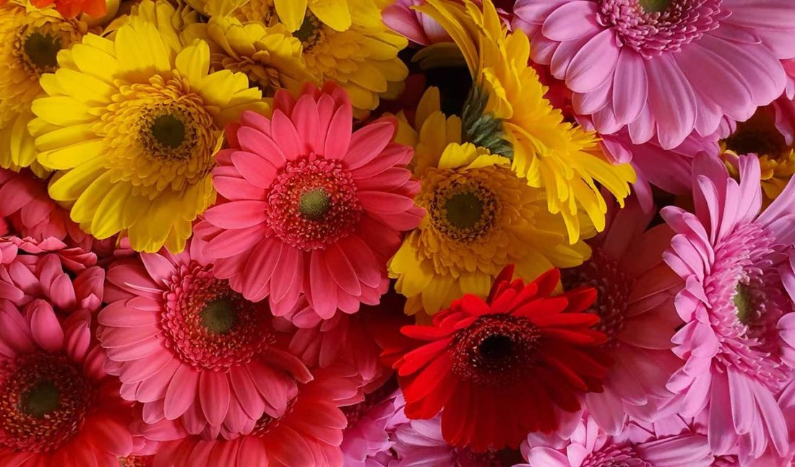
Wassenaarseweg 1a · Leiden
Vers van
de veiling.
De bloemen komen rechtstreeks van de veiling, voor marktprijs. In de winkel in Leiden, op de stal in Noordwijk en op de markt in Leiderdorp.
De dochter van Hans Kanbier.
Kanbier's Dochter is de opvolgster van Hans Kanbier. De winkel zit in het voormalige Posthof aan de Wassenaarseweg, en is zeven dagen per week open.
Alle bloemen en planten halen we rechtstreeks van de veiling. Zo zijn ze vers, en betaal je marktprijs.
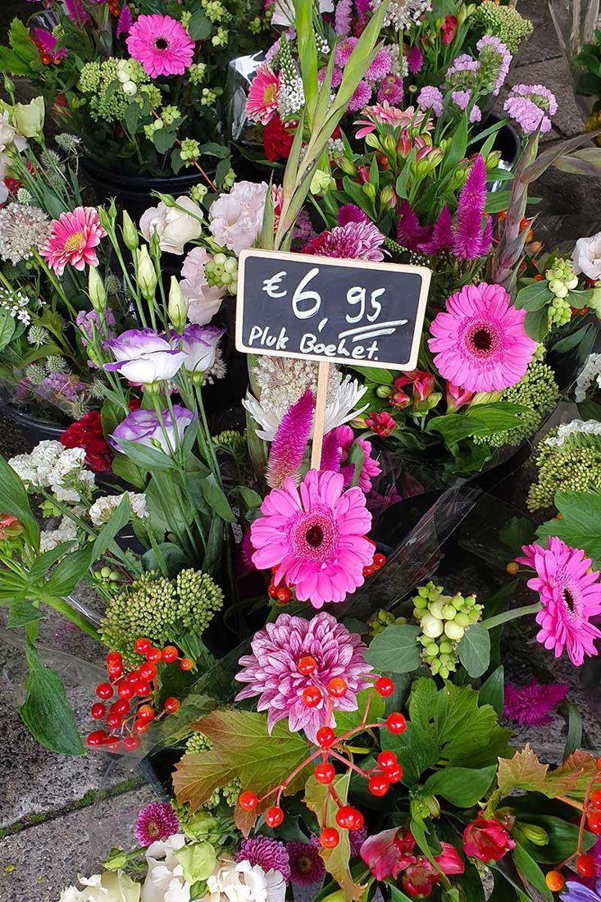
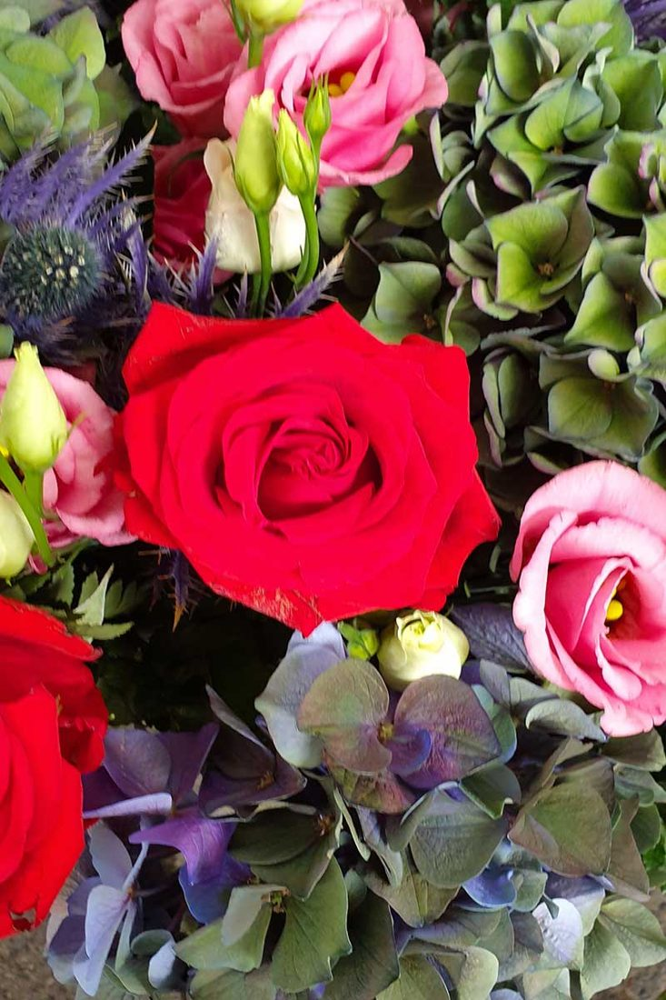
Waar staan
we vandaag?
De winkel is elke dag open.Wassenaarseweg 1a, Leiden
Winkel Leiden
Wassenaarseweg 1a, in het voormalige Posthof. Zeven dagen per week open.
Stal Noordwijk
Op woensdag staan we met de stal in Noordwijk.
Markt Leiderdorp
Van donderdag tot en met zaterdag op de markt in Leiderdorp.
Zo gaat het
de deur uit.
Eigen boeketten, gemaakt in de winkel en op de stal. Sleep of swipe door de rij.
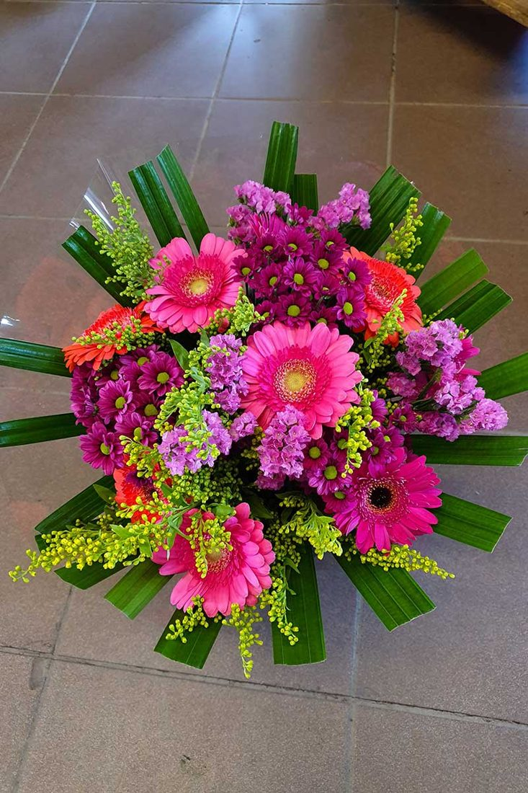
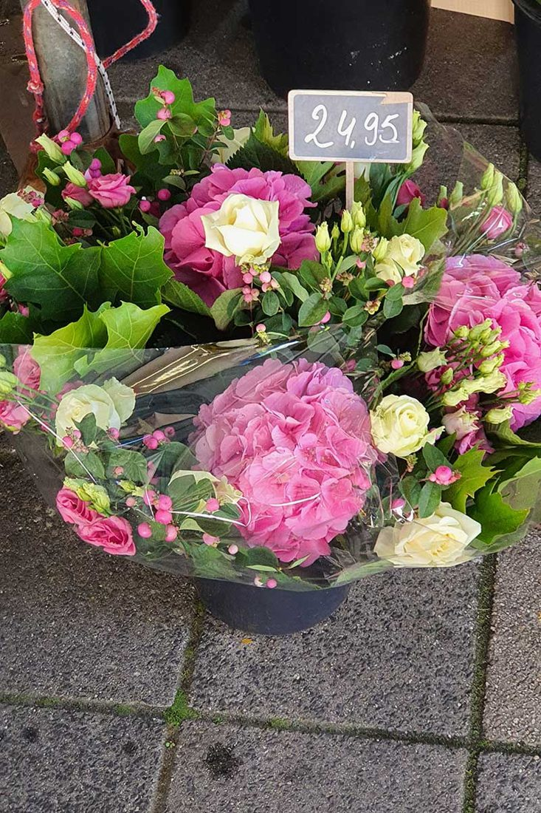
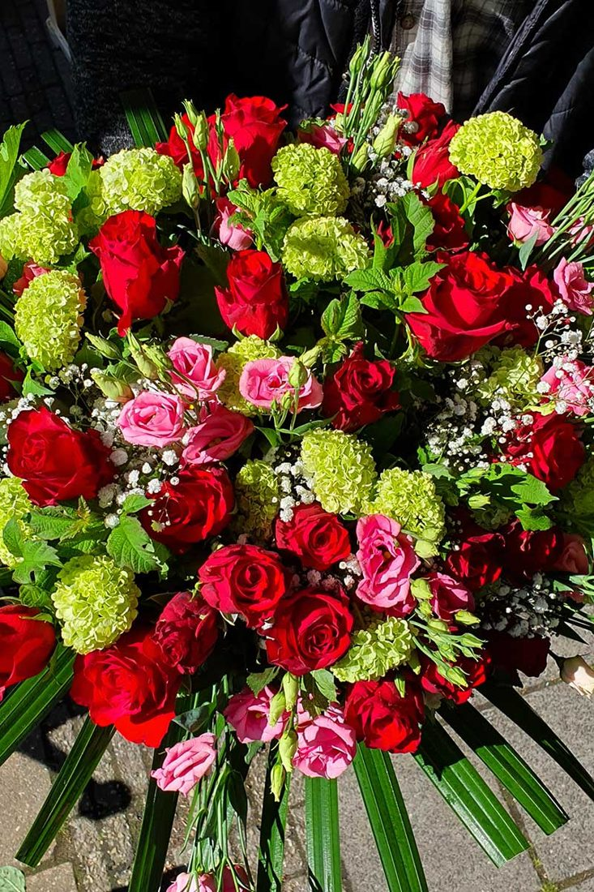
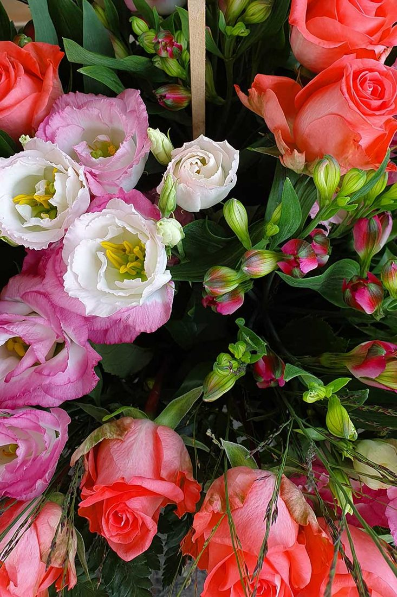
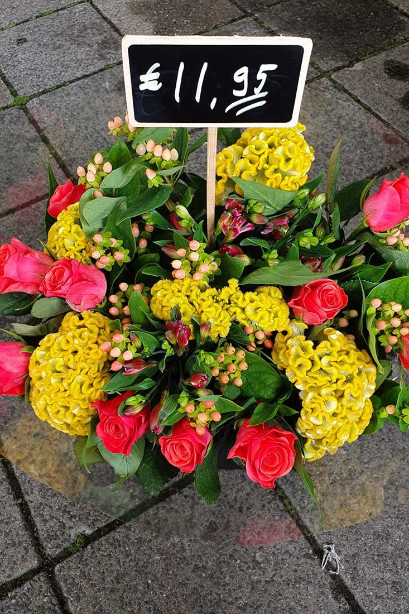
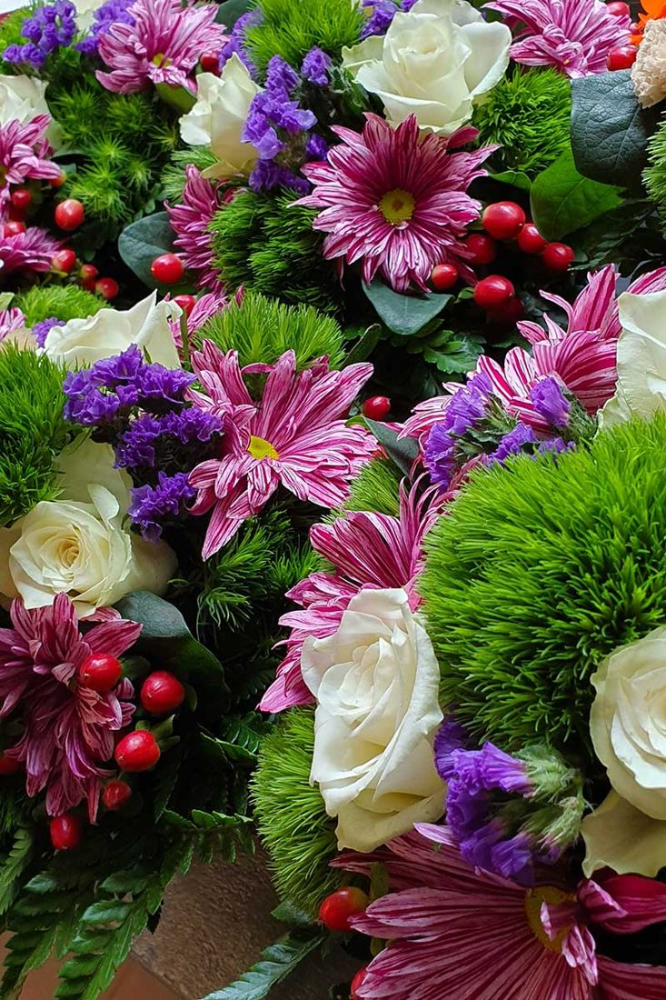
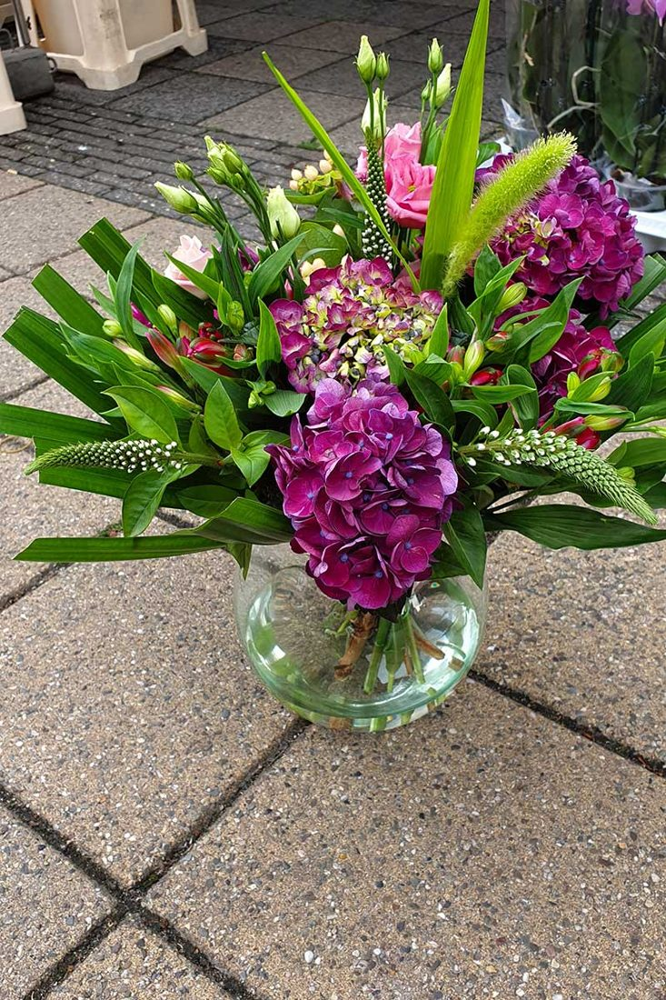
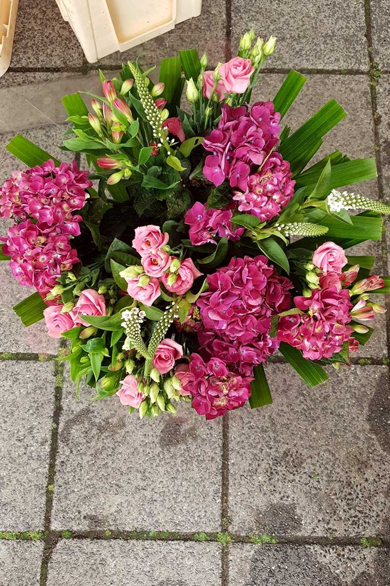
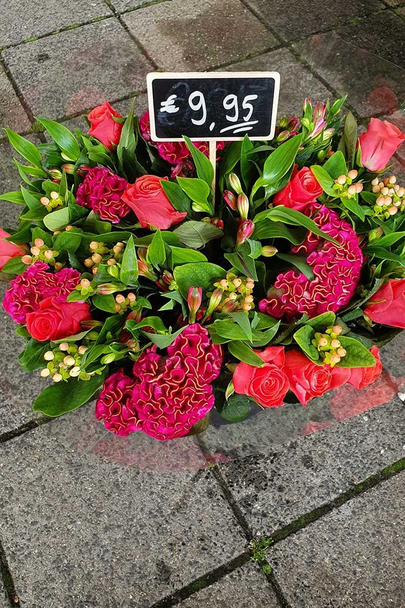
Voor elk
moment.
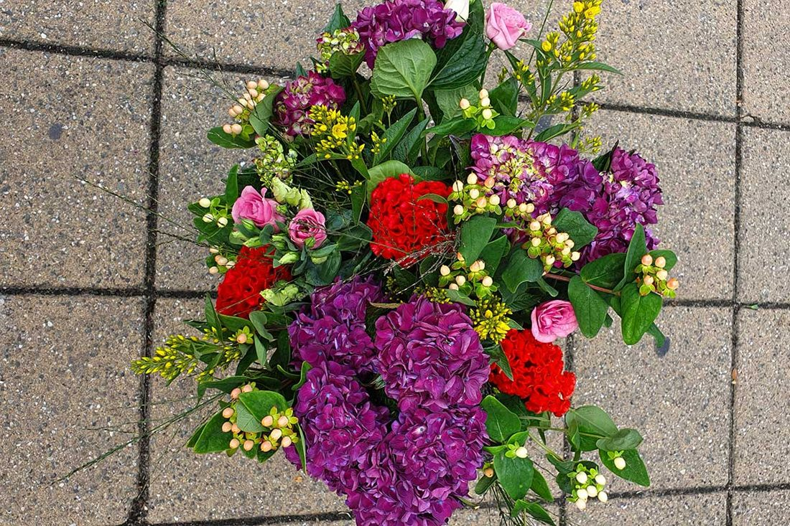
Bruid
+Het bruidsboeket, corsages, autoversiering en aankleding van de feestlocatie. Alles is mogelijk, zodat jullie van de dag zelf kunnen genieten.
Afscheid
+Bij het overlijden van een dierbare moet er veel geregeld worden. Wij maken een mooi en passend rouwstuk of rouwboeket naar wens.
Bedrijven
+Bloemen bestellen op factuur, en een fleurige attentie voor het personeel bij een verjaardag, een trouwdag of als kerstgeschenk.
Kerst
+Kerststukken en kerstbomen, en aan het einde van het jaar ook vuurwerk.
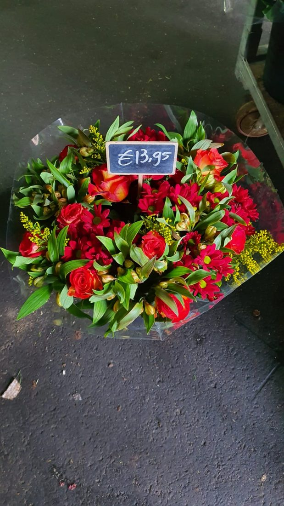